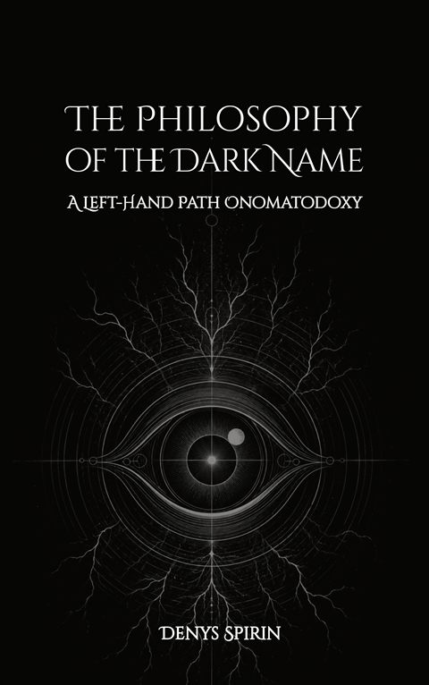

Main links
Volume V
The Philosophy of the Dark Name: A Left-Hand Path Onomatodoxy
The Name has been philosophically homeless for centuries. This book gives it an ontology — a Left-Hand Path onomatodoxy. Darkness, the domain of the singular will, precedes light, the regime of the general. Every concept, law, and institution is a secondary product of a dark act of positing. The tradition read the relation in reverse. This is the correction.
Contents
- Chapter 1Name. A Name has no meaning for it designates something too concrete for sense to grasp; wherever understanding occurs, a concept has already taken the name's place.
- Chapter 2Darkness. The Name is a dark code of singularity; the concept is a light code of replaceability.
- Chapter 3Forms. When every distinction has been made, the one who distinguishes has nothing left to do.
- Chapter 4Ascent. Maximal light and maximal darkness converge in nonexistence.
- Chapter 5History. History is the record of darkness forgetting its own Name.
- Chapter 6Silence. Only rhetoric separates the sacred summit from the blank it was built to oppose.
- Chapter 7Ground. The form of the cup is held by something the observer cannot override and physics cannot name.
- Chapter 8Will. The laws of nature are held, and what holds them is a will.
- Chapter 9Awareness. A will that sustains a regularity across the breadth of the cosmos possesses the full form of a subjective conscious act.
- Chapter 10Acausality. An acausal will that posits a distinction is a subject. A subject grasped in its concreteness is a Name.
- Chapter 11Logos. In the beginning there were Names.
- Chapter 12Potentiality. Tiamat precedes every god. From her, self-positing wills carve their worlds — and nothing in her nature permits only one.
- Chapter 13Breach. The human being is acausality's foothold in a world of law. Apotheosis is the breach deepened into self-positing.
- Chapter 14Suffering. Suffering is subordination to another will's order. The remedy is to ground the will in itself.
- Chapter 15Energy. The Name is the will's energy — its concrete manifestation in the field of encounter. An event is the trace of a collision between Names.
- Chapter 16Pacts. Dark relations hold between Names and cannot survive the replacement of either party. Their crossing produces a synergy irreducible to either will.
- Chapter 17Masks. The mask replaces the Name with a category and restructures the wearer from the inside. Every light institution runs on this exchange.
- Chapter 18Direction. The Name is consciousness directed at a singular will. The darker the aim, the more alive the distinction.
- Chapter 19Crossing. The crossing of two Names produces a third — the Name of what occurred between them, irreducible to either will.
- Chapter 20Knowledge. To know a Name is to be changed by it. Dark knowledge is becoming.
- Chapter 21Apotheosis. Apotheosis is self-positing when the breach deepened until the Name speaks from its own acausal depth and holds against everything that would reabsorb it.
- Chapter 22Death. Death strips everything borrowed. A self-posited Name passes through; a will that ran on the god's hardware is collected.
AfterwordTenebrae lucem devorent.